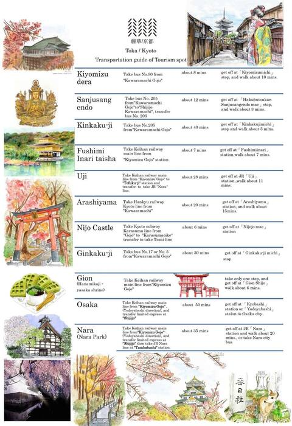
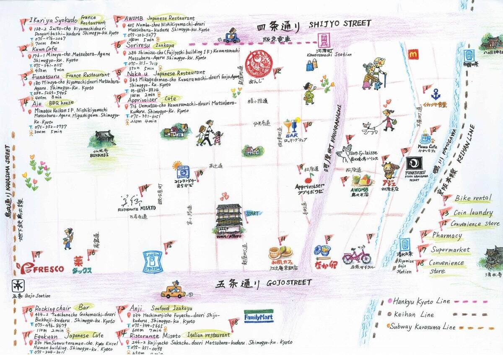

노션링크
출국 정보
- 출국 / 서울 (ICN) 출발도착 오사카 (KIX)
출국도시 / 시간 : 서울 2023.01.20(금) 13:10
도착도시 / 시간 : 오사카 2023.01.20(금) 15:00
비행시간 : 1시간 50분
공항 SK지점 돼지코 대여 / 불가할시 오사카 공항 구매가 제일 쌈
토카호텔 정보
- 16:00체크인, 11:00체크아웃
- 교토 중심부 위치, 게이한 열차로 기요미즈고역에서 도보 5~6분
- 체크인 체크아웃 셀프
- 545 시무로코가타초, 후야초도리, 고조 아가루,일본 교토시 시모교구 600-8059
토카예약 정보
- 날짜 1/20 체크아웃2/24 4박
객실 유형: 객실 202/1베드룸
체크인 16: 00 ~ 22: 00 ★★ 체크아웃 시간은 11시 이전입니다.
교토역에서:
택시: 10분, 후야초도리 고조 아가루, 서쪽 50m,
택시비 약 1000
버스: 교토역의 버스 정류장, 205번, 4번 또는 17번을 타세요.
→“가와라마치 고조” 정류장 하차, 도보 약 4분,
버스 요금\ 230
지하철: 카라수마 선, “카라수마 고조” 역에서 하차,
도보 약 8분, 수수료\ 210
 
쇼핑 정보
- 돈키호테
- 편의점털이
- 넝담곰 굿즈
- 러쉬
음식 위시리스트
- 오코노미야끼
- 덴뿌라
- 스시
- 우동
- 말차디저트
- 야끼소바
- 당고
- 스키야키
- 일본가정식
- 푸딩
- 라무네
- 야끼토리